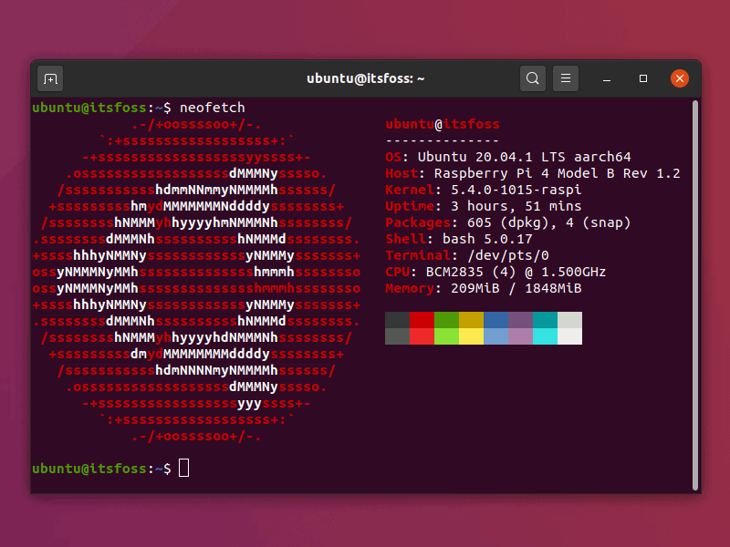

Infrastructure HomeLab
Projet "King's Landing"
Conception et déploiement d'une infrastructure serveur personnelle complète.
Auto-hébergement sécurisé de services critiques avec architecture Zero Trust et virtualisation Docker.

🏗️ Les Fondations (Système & Réseau)
Le serveur tourne sous Ubuntu Server 24.04 LTS, offrant une base stable et sécurisée pour l'ensemble de l'infrastructure.
🔒 Sécurité d'accès (La forteresse) :
- Cloudflare Zero Trust (Tunnel) : Protection maximale avec aucun port ouvert sur la Box Internet.
- Avantage majeur : Pas de NAT/Port Forwarding. Le serveur est invisible aux scanners de ports classiques.
- Domaine : Tous les services passent en HTTPS automatiquement via un wildcard DNS.
⚙️ Le Moteur (Virtualisation)
L'infrastructure repose sur Docker & Docker Compose pour la conteneurisation de tous les services. La gestion centralisée est assurée par Portainer, une interface web permettant de piloter l'ensemble des conteneurs.
🔧 Les Challenges techniques résolus :
- Gestion des conflits de versions Docker : Utilisation de Pinning/Unpinning avec apt-mark pour verrouiller les versions critiques.
- Contournement de la sécurité stricte d'Ubuntu 24.04 : Configuration
spécifique pour AppArmor qui bloquait certains conteneurs (via
security_opt: apparmor=unconfined).

Interface Portainer : Centre de commandement Docker.
📦 Les Applications Hébergées (Self-Hosted)
Ensemble de services auto-hébergés pour remplacer les solutions cloud propriétaires et garder le contrôle total sur mes données.
| Service | URL (Exemple) | Description |
|---|---|---|
| Immich | photos.exemple.com | Alternative à Google Photos. Sauvegarde automatique des photos mobiles, reconnaissance faciale par IA, stockage local haute performance. |
| Vaultwarden | coffre.exemple.com | Coffre-fort de mots de passe. Instance Bitwarden légère. Les données sont chiffrées et restent sous contrôle local. |
| Portainer | portainer.exemple.com | Centre de commandement. Permet de gérer, mettre à jour et surveiller tous les conteneurs Docker depuis une interface web. |

Immich : Alternative self-hosted à Google Photos.

Vaultwarden : Gestionnaire de mots de passe sécurisé.
🖥️ Le Dashboard (L'interface finale)
Après avoir testé Glance et Homepage (qui posaient des soucis de permissions fichiers sur ce système spécifique), le choix s'est porté sur Homarr.
✨ Avantages de Homarr :
- Configuration 100% graphique : Interface Drag & Drop intuitive, pas de fichiers YAML complexes à gérer.
- Personnalisation avancée : Intégration de CSS moderne (oklch) pour un design réactif et personnalisé.
- Centralisation : Point d'accès unique pour tous les services auto-hébergés.

Dashboard Homarr : Interface centralisée pour tous les services.
🛡️ Architecture de Sécurité
L'utilisation de Cloudflare Zero Trust avec des Tunnels chiffrés permet d'exposer les services sur Internet sans ouvrir le moindre port sur le routeur domestique.
Cette approche offre une protection maximale contre les attaques directes et les scans de ports, tout en simplifiant la gestion des certificats SSL/TLS qui sont automatiquement gérés par Cloudflare.
🔐 Points clés de sécurité :
- Aucun port ouvert sur la Box Internet (Sécurité Zero Trust)
- Tunnel chiffré permanent vers Cloudflare
- Certificats SSL automatiques et renouvelés
- Gestion des accès via policies Cloudflare
Cloudflare Zero Trust : Protection et tunneling sécurisé.
🏆 Compétences Démontrées
En réalisant ce projet, j'ai validé des compétences clés dans plusieurs domaines de l'infrastructure et du DevOps.
Admin Sys Linux
- Ligne de commande avancée (bash, ssh)
- Gestion des droits (chmod/chown)
- Services systemd et gestion des processus
- Diagnostic et résolution de problèmes système
DevOps
- Conteneurisation avec Docker
- Orchestration via Docker Compose
- Gestion des volumes persistants
- Stacks d'applications multi-conteneurs
Réseau & Sécurité
- Compréhension des DNS et wildcard
- Tunnels chiffrés (Cloudflare Zero Trust)
- Gestion des accès externes sans port forwarding
- SSL/TLS automatique
Résolution de Problèmes
- Diagnostic via logs Docker
- Adaptation de solutions (fix AppArmor)
- Pivot vers de meilleurs outils (passage à Homarr)
- Gestion des dépendances système